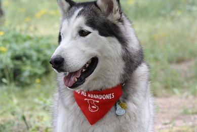
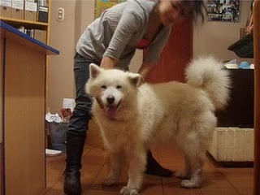
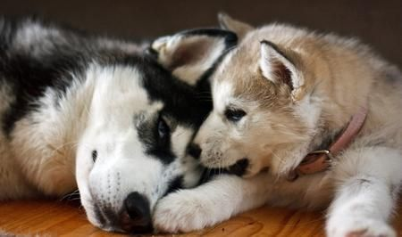
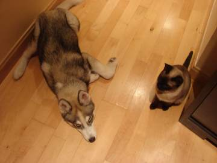
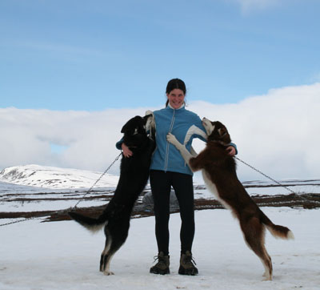
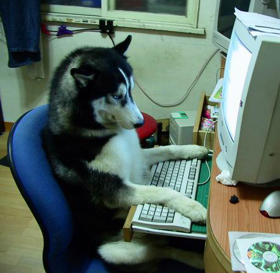

Si quieres adoptar un Nórdico
Si has tomado la decisión de adoptar un nórdico, lo primero darte las gracias por salvar la vida de dos perros porque al sacarle de la protectora o perrera a uno, otro perro que esté en peligro en la calle puede ocupar ese sitio.
En las protectoras o perreras hay desde cachorros hasta ancianos que han ido a parar allí o enfermos. Cada uno con su particular historia pero todas tristes. Algunos de los perros han sido abandonados porque sus dueños se cansaron, problemas familiares, murieron,… pero muchos otros fueron maltratados, desatendidos o encadenados durante largos periodos de tiempo.
Todo se hubiera solucionado si sus propietarios anteriores hubieran pensado seriamente sobre la responsabilidad que conlleva tener un perro.
Aún así, con los problemas que haya sufrido el perro, la mayoría salen reeducados con éxito.
Pasos que te tienes que plantear para adoptar:
Raza
Si has elegido esta página, es porque tienes intención de adoptar un nórdico, pero, ¿te has planteado por qué esa raza? ¿Te has informado sobre el comportamiento y características de esta raza?
Mucho de los abandonos de los nórdicos es porque los propietarios no se han informado previamente. Por favor, hazlo antes de elegir uno y llevarlo a casa. No son perros falderos.
Necesitan mucho ejercicio, sobre todo uno activo: correr, bicicleta, patines,… ¿Tienes ese tiempo? De esta manera eliminan toda la energía y luego son perros muy muy tranquilos en casa.

Edad
Ya te has informado y sigues queriendo adoptar uno. ¿Cachorro, Joven o Adulto?
No es importante la edad en un perro adoptado. La gente es reacia a adoptar un adulto; los más solicitados son los cachorros, son preciosos, verlos crecer, los puedes educa a tu manera,… Pero no es cierto, se ha visto que el periodo de adaptación de un adulto es mucho menor que un cachorro.
Los cachorros llevan mucho trabajo y paciencia. Ten en cuenta que hacen ruido por las noches, pueden llorar hasta que se acostumbren a estar sin su madre y hermanos, hay que educarles en higiene, sociabilidad y rompen la tranquilidad mucho más que un bebé. Sin embargo, no hay nada más satisfactorio que ver el crecimiento y desarrollo de un frágil cachorrito en un adulto fuerte y saludable.
En cambio, los adultos ya han madurado y asimilan con más rapidez todo lo que se les enseña, las normas de la higiene las tienen establecidas, son muy agradecidos, piensa que han conocido el sufrimiento y el abandono; parece que saben que les has sacado de su propio infierno.
Un perro adulto, sigue queriendo jugar, correr y salir a pasear.
Un perro adoptado puede ser perfectamente reeducable, al pasar el periodo de adaptación a tu nueva familia es posible que incluso no necesiten ningún tipo de educación.

Tengo otro perro
¿Se llevarán bien? Eso sobre todo lo sabes tú que conoces el comportamiento de tu perro. Normalmente si vas a introducir otro miembro a la manada que sea de distinto sexo (la edad da igual), ya que si no puede haber enfrentamientos por territorio.
Lo ideal es que elijas al perro no por su belleza si no por su comportamiento, su belleza interior. Pregunta a la protectora donde está el perro su comportamiento, cuanta más información te den mejor.

Si puedes, ve a la protectora y saca de paseo al perro, valórale y júntale con el tuyo en un terreno neutral para ver cuál es su reacción.
Tómate tu tiempo. A nadie le viene bien una elección precipitada, te perjudicará a ti, al perro y a la protectora. Todos los centros de adopción de animales estarán encantados de asesorarte y de contestar a todas las preguntas que tengas antes de que tomes la decisión final.
.jpg)
Tengo un gato
Algunas veces los perros son testados: como se lleva con perros, niños, personas y también gatos. Esas ocasiones lo tienes fácil: o se lleva o no se lleva. Si no se lleva, siempre se puede educar al perro, pero eso conlleva mucha paciencia y puede que asesoramiento de un profesional.
Si no está testado, puedes solicitar a la protectora a ver si lo pueden hacer. No es fácil pero cabe la posibilidad.

He elegido uno
Si has mirado y remirado la página web (recuerda, no es algo precipitado) y has encontrado al tuyo, si es que te estaba llamando con esa foto.
Si es una protectora o perrera cercana (es lo recomendable) llama por teléfono e infórmate bien de todo en cuanto al perro (los teléfonos y los emails vienen en el texto). Ellos te dirán todo lo que necesitas saber, desde su comportamiento, sus condiciones,…
Si la protectora está en otra ciudad, lee que ponga que se envía, si no pone nada o pone que no, de todas maneras llama e infórmate, puede que os podáis poner de acuerdo con las condiciones. Es recomendable irlos a buscar en persona, ya que estos perros sufren mucho en los transportes y sobre todo cuando son cachorros.
Sea la protectora que sea, deberás rellenar un formulario de preadopción, ellos os lo facilitan. Y ya a partir de ahí, comenzarán los preparativos para la adopción.

Dentro de unos días, ya estará vuestro Nórdico en casa. ¡¡FELICIDADES!!
Escríbenos si tienes cualquier duda, te responderemos lo antes posible.
contacto@nordicosenadopcion.com

Añadir nuevo comentario